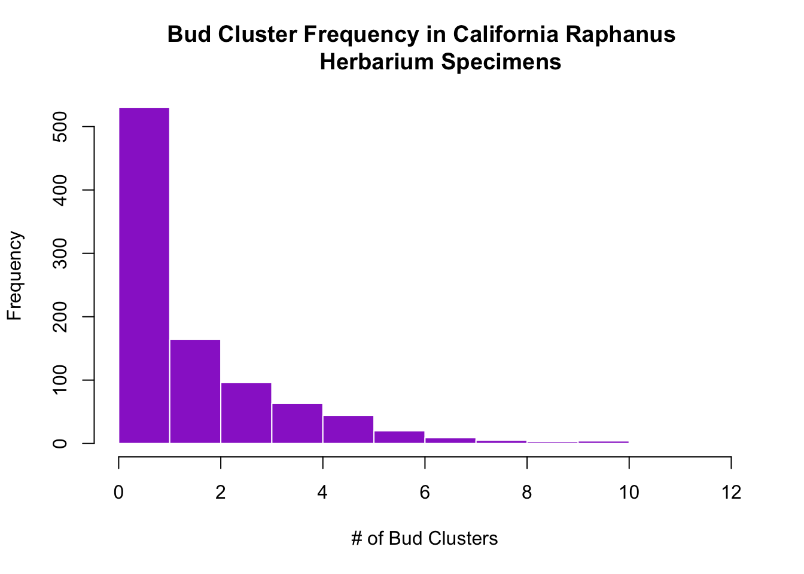
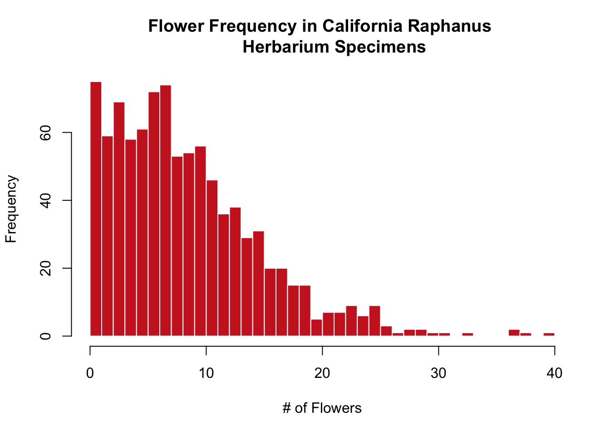
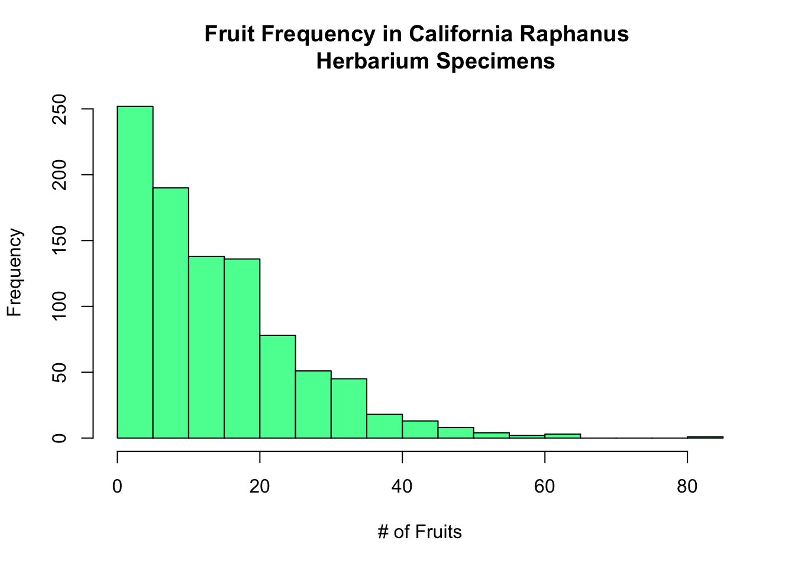
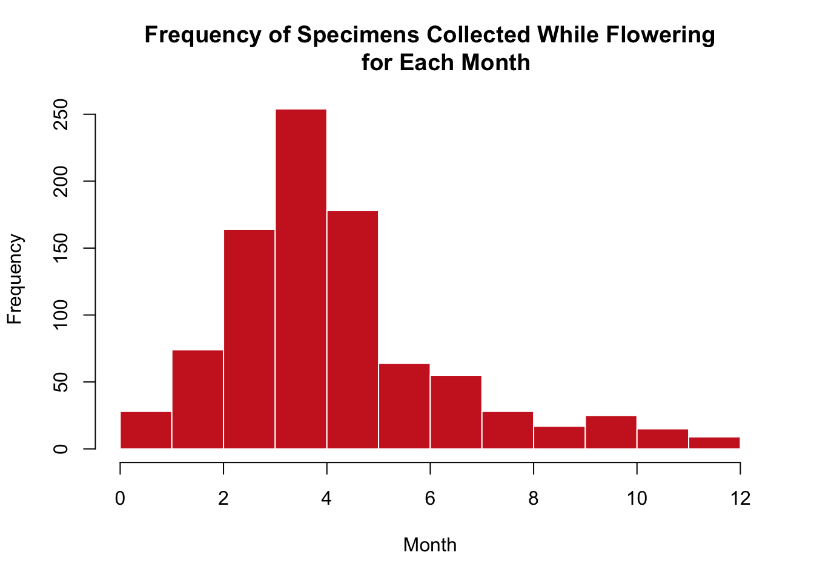
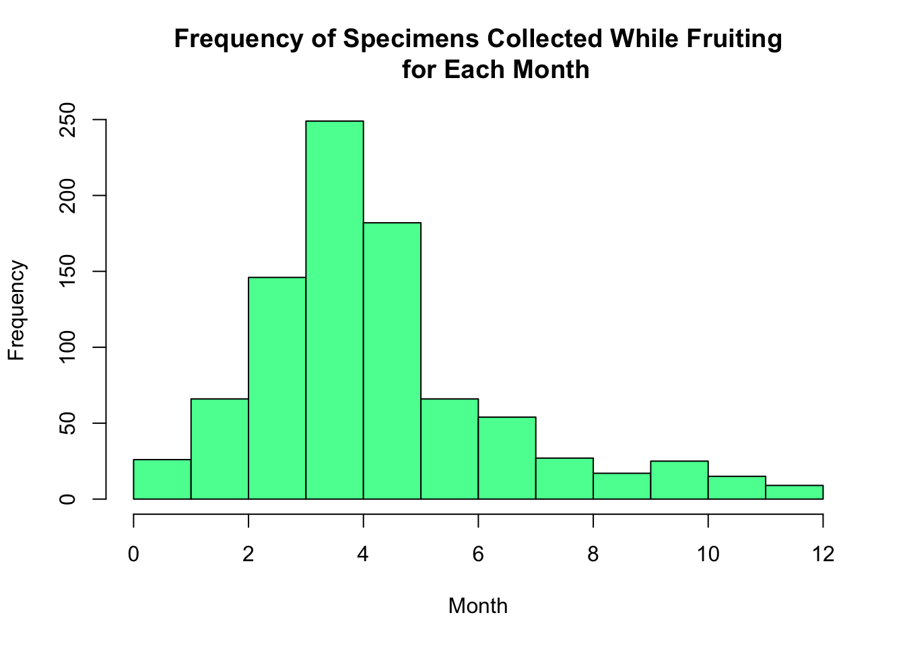

All specimen images were downloaded through the Consortium of California Herbaria (cch2.org). The search was filtered to only include specimens within R. raphanistrum and R. sativus that were collected within California and had corresponding. ~70 (get exact number?!?!?!?) specimens held in possession by the San Diego Natural History Museum were unimaged, but included in the full data set. These specimens were imaged using equipment (more specificity here?) from the University of California, Davis Center for Plant Diversity (Herbarium) and edited in Adobe Lightroom. The full specimen data set, prior to specimen exclusions, consisted of 1,251 specimens (*this number may be wrong and not include SD*.)
Code
library(tidyverse)
── Attaching core tidyverse packages ──────────────────────── tidyverse 2.0.0 ──
✔ dplyr 1.1.4 ✔ readr 2.1.5
✔ forcats 1.0.0 ✔ stringr 1.5.1
✔ ggplot2 3.5.2 ✔ tibble 3.3.0
✔ lubridate 1.9.4 ✔ tidyr 1.3.1
✔ purrr 1.1.0
── Conflicts ────────────────────────────────────────── tidyverse_conflicts() ──
✖ dplyr::filter() masks stats::filter()
✖ dplyr::lag() masks stats::lag()
ℹ Use the conflicted package (<http://conflicted.r-lib.org/>) to force all conflicts to become errors
1.1 Specimen Exclusions
Many of the exclusions applied to the data were guided by the exclusion criteria described in the methods of Love and Mazer (2021). 1 specimen was excluded due to the blurriness of the image. 12 images were excluded for having a poor date range recorded for the time of collection. A date range was considered unusable if it spanned more than a month due to the frequently changing nature of Raphanus reproductive stages. Any specimens that were collected off of islands (e.g. Channel Islands) were excluded due to the unique climatic setting and lack of gene flow. 45 island specimens were removed from the data set based on this criterion. 2 specimens were deemed unfit for imaging, defined here as specimens that had an envelope containing plant matter on the specimen sheet, but no actual sample that could provide counts of reproductive structures. 71 specimens were excluded for having unreliable location data that was either difficult to assign coordinates to (see Assigning GPS Coordinates and Uncertainty) or too broad to draw accurate and precise climate data from. 5 specimens were excluded for having no listed collection date. 21 specimens were excluded on the basis of having poor metadata, lacking several pieces of information that are necessary understanding the spatial, temporal, and climatic context of the specimen. Lastly, 246 specimens were removed for possessing a spatiotemporal duplicate in the remaining data set, removing any repetition for a more cohesive data set.
1.2 Assigning GPS Coordinates and Uncertainty
Any specimens without previously entered GPS coordinates were assigned GPS coordinates by hand. The locality data provided was used to narrow down a precise geographic position in Google Maps, occasionally with the assistance of ChatGPT or local records and articles to provide historical context. The coordinates were then taken from Google Maps and entered into a program that allows for visualizing uncertainty radii around a specified point. The uncertainty radius was hand-picked and cautiously selected to encompass the extent to which the locality description would logically still apply, similar to the approach described in the Georeferencing methodology in Bontrager et. al 2025. The coordinate system was for all hand-determined GPS coordinates was marked as World Geodetic System 1984 (WGS84), as used by both Google Maps and the map radius software (calcmaps.com).
WGS 84 was selected as the coordinate system to standardize all samples against due to its prevalence in location data following its introduction in 1987. Based on information gathered from NOAA, the one to two meter difference between coordinates in NAD83 and WGS84, the two coordinate systems are considered equal for the purposes of the Raphanus data. However, the differences between NAD27 and WGS84 are often greater, so any NAD27 points were converted to WGS84. The calculations were primarily conducted en masse by ChatGPT while spot checking using the calculator provided by the West Virginia Department of Environmental Protection. The variance between coordinates in NAD27 and WGS84 was on the scale of 10-3 or 10-4, correlating to a 10-100m discrepancy between the points.
Specimens with coordinates that were listed as NAD27 in the CCH2 data were converted to CCH2. There were two subsequent pathways for specimens with coordinates that were listed as “preprocessed” or “unknown”, or were otherwise unlisted. For specimens collected prior to 1987, NAD27 was broadly assumed to be the coordinate system. For specimens collected after WGS84, it was assumed that any modern GPS devices, computers, or phones operate in WGS84. Due to the uncertainty associated with these assumptions, all original coordinate and geodetic datum data was saved separately.
An additional protocol was developed for examining and assigning missing uncertainty radii entries in the CCH2 data, all of which included coordinates that served as the starting judgement point. Based on the Love and Mazer (2021) protocol, 4000 meters was deemed the ceiling cutoff for assigning uncertainty radii at this stage. For specimens that had narrowly defined, “good” locality data, the specificity of location and inclusion of coordinates generated the assumption that the uncertainty was greater than 4000 meters and the specimen’s uncertainty was labeled as 3999. If a specimen was determined to have broad, “bad” location data, the specimen label was then read to determine the origin of the coordinates. If the coordinates were present on the original label, it was assumed that the coordinates are accurate and that the location data was poorly recorded, earning the specimen an uncertainty radius assignment of 3999. However, if there were no coordinates present on the label, it was assumed that they were added at a later time based on the poor location and it cannot be safely assumed that the uncertainty radius is less than 4000 meters; these specimens were then assigned an uncertainty radius of 4001. The binomial nature of this distribution can eventually be reanalyzed and assigned a more specific uncertainty value depending on the nature of the climate data that is used.
By using the 111.1 kilometer ~ 1 degree conversion, it was decided that any specimen with an original latitudinal or longitudinal coordinate that was rounded to the nearest 0.1 degree (~11 km) should be reexamined to determine whether the coordinates or uncertainty radii could be adjusted to more precisely fall on either side of the previously set 4000 meter uncertainty radius cutoff. Specimens with location descriptions that were determined to be broader in extent than 4000 meters, were assigned an uncertainty radius of 4001 if their previously listed uncertainty radius was not already greater than 4000. Specimens with location data that was deemed more specific than 4000 meters (e.g. parks, specific intersections, street addresses) then received adjusted, more precise coordinates in WGS84 and were reassigned a fitting uncertainty radius using the map radius software found at calcmaps.com.
1.3 Choosing the Right Machine Learning Program
Many previously published scientific papers have also utilized images from various herbaria or citizen science platforms such as iNaturalist to study phenological trends. These papers were examined to get a sense of the software options available to annotate images, build models, and subsequently train machine learning programs to apply the model to a larger data set. There were many possible paths that varied in coding language, accessibility, complexity, and suitability for the needs of the project. Eventually, Roboflow was selected as the most practical choice for conducting the study, as the software provides the ease of completing annotation and training models in the same location. Additionally, Roboflow provides model evaluations with specific feedback such asprecision and recall metrics as well as confusion matrices to easily visualize errors in the model and coding prompts to deploy the model to other sets of images.
1.4 Selecting Specimens for Model Training
It was initially decided that 100 specimens, slight greater than ten percent of the full data set, would be selected to be annotated and used to train the phenology models. The first consideration made was to include at least one specimen from each of the 31 herbaria that are represented by the complete specimen data set. Afterwards, specimens were added in to be relatively proportional to the distribution of the data set. When continuing to add in specimens after initial herbarium representation was accounted for, three factors received the majority of focus: time of collection, reproductive stage, and complexity of specimens. The time of collection was critical to creating a diverse, representative training set. While most specimens are collected during the spring and summer months, when flowering and fruiting is widespread, specimens collected during both the very beginning and the later months of the calendar year were fairly represent. Additionally, a majority of specimens possess both flowering and fruiting structures, so training set selection was carefully done to also include specimens that had not yet begun to fruit or that only had fruit left. Lastly, due to the many different conditional circumstances that can occur in herbarium specimens, such as image quality, age, human error, etc., both complex, overlapping specimens and well-defined clear cut specimens were selected for annotation to prepare the model for any unusual specimen appearances.
1.5 Annotating Herbarium Specimens
Insert text here about the procedures for annotating specimens and the subsequent additions of specimens to the training set
Code
#Insert Julia's code for resizing images, I think it was in bash?
1.6 Training Model Versions
Insert text here about how we picked different models to train, how each version did, the 70-20-10 distribution, model metrics and evaluations, etc.
1.7 Deploying Model from Roboflow
Insert Julia’s codes to get the JSONS and get JSONS to data frame
Code
#eventual code here
1.8 Converting Model Data into a Usable Format
The following code was created to achieve two purposes. The first was to combine the JSON information on phenology (reproductive structure counts) after running both the original 155 annotated specimen images and the remaining 782 unannotated specimen images through the Roboflow model. The second was to combine all then phenology data with a subset of the data provided by CCH2. Intermediate steps were incorporated as needed to ensure compatibility when merging data frames.
Code
#Load tidyverse package into R from Librarylibrary(tidyverse)#Simplify CCH2 data down to the columns of interest#Columns of interest were determined based on what would be necessary to identify each specimen and what would be necessary for using climate data to understand the effects of climate variables on flowering timeimportant_specimen_data <-read.csv("FullSpecimenCCH2Data.csv") %>%select(id, institutionCode, specificEpithet, recordedBy, eventDate, year:day, verbatimEventDate, county, locality, decimalLatitude:coordinateUncertaintyInMeters)#Change "id" column from integer class to character class in CCH2 data frameimportant_specimen_data$id <-as.character(important_specimen_data$id)#Combine Annotated and Unannotated phenology class data into one big data frameann <-read.csv("annotated_inference_counts.csv")unann <-read.csv("inference_counts_RETRY.csv")entire_class_dataset <-bind_rows(ann, unann)#Change the name of "image" column in phenology class data frame to "id" to align with CCH2 data frameentire_class_dataset <- entire_class_dataset %>%rename(id = image)#Images that were larger than Roboflow's maximum upload size of 20MB were resized via code and given the prefix "SML_" in the filename to discern the edited image. However, this prefix appeared in the id column of the phenology class data and needed to be removed in order to combine the ohenology class and CCH2 data framesentire_class_dataset$id <-str_replace(entire_class_dataset$id, "^SML_", "")#Remove any observation (e.g. duplicates) that is in phenology class, but not CCH2 datarm <-setdiff(entire_class_dataset$id, important_specimen_data$id)entire_class_dataset <- entire_class_dataset %>%filter(!entire_class_dataset$id %in% rm)#Merge the CCH2 data frame and the full phenology class data frame into one large data frame, matching based on the id column with a precautionary full jointotalinfo <-full_join(entire_class_dataset, important_specimen_data, by ="id")#Export the full combined data frame into a CSV for further useswrite.csv(totalinfo, "completed_specimen_data.csv", row.names =FALSE)
At a later time, it was discovered that, when running the code for the model on specimens, there was one previously hand-annotated specimen that was given counts of 0 bud clusters, 0 flowers, and 0 fruits. After hand checking this image, it was clear that all three reproductive structures could be found on the specimen. The original hand-annotation counts from Roboflow were assigned to the specimen using the following code:
Code
#Read in full complete data CSVfulldata<-read.csv("completed_specimen_data.csv")#Fix the specimen that was falsely determined to have no assigned reproductive structure counts by individually assigning the accurate counts from the original annotations done by hand in Roboflowfulldata <- fulldata %>%mutate(Bud.Cluster =if_else(id ==1368028, 3, Bud.Cluster),Flower =if_else(id ==1368028, 2, Flower),Fruit =if_else(id ==1368028, 2, Fruit))#Export this adjusted change back into the CSVwrite.csv(fulldata, "completed_specimen_data.csv", row.names =FALSE)
1.9 Extracting Climate Data
Add in text here about how climate NA was Chosen and how we sourced data, lots of credit to Bontrager, etc.
Code
#EVENTUAL BONTRAGER + Additional to us code here... unless we somehow link the entire other markdown into here if that's a thing
2 Trial Plots
SEE BELOW NOTE UNDER ALL CHUNKS OF CODE: Instructions for additional phenology plots:
Write the code for eahc plot in it’s own chunk, and make sure the plots show up in the rendered html. (try both plots in same chunk vs separate chunks, and see which output html style you like better!)
I THINK I DID THIS BELOW:
1) First R chunk: Filter to only include specimens in flower, then create a histogram by month. SO the final plot should show the number of specimens collected in flower for a given month.
2) Second R chunk: Do the same for Fruit
Basic Frequency Plots:
Code
#Bud Clustershist(fulldata$Bud.Cluster, breaks =10, freq =TRUE, col ="darkorchid3", border ="white", main ="Bud Cluster Frequency in California Raphanus Herbarium Specimens", ylab ="Frequency", xlab ="# of Bud Clusters")

Code
#Flowershist(fulldata$Flower, breaks =40, freq =TRUE, col ="firebrick3", border ="white", main ="Flower Frequency in California Raphanus Herbarium Specimens", ylab ="Frequency", xlab ="# of Flowers")

Code
#Fruitshist(fulldata$Fruit, breaks =25, freq =TRUE, col ="seagreen1", border ="black", main ="Fruit Frequency in California Raphanus Herbarium Specimens", ylab ="Frequency", xlab ="# of Fruits")

Histograms for Frequency of Structure Per Month:
Code
#Flowering and Monthsflowering <- fulldata %>%filter(Flower >0)hist(flowering$month, breaks =seq(0, 12, 1), freq =TRUE, col ="firebrick3",border ="white", main ="Frequency of Specimens Collected While Flowering for Each Month", xlab ="Month", ylab ="Frequency")

Code
#Fruits and Monthsfruiting <- fulldata %>%filter(Fruit >0)hist(fruiting$month, breaks =seq(0, 12, 1), freq =TRUE, col ="seagreen1",border ="black", main ="Frequency of Specimens Collected While Fruiting for Each Month", xlab ="Month", ylab ="Frequency")

NOTE FOR JULIA: I was having trouble rendering, it’s giving me an error message in Background Jobs
2.1 Running Code
When you click the Render button a document will be generated that includes both content and the output of embedded code. You can embed code like this:
Code
1+1
[1] 2
You can add options to executable code like this
[1] 4
The echo: false option disables the printing of code (only output is displayed).
Source Code
---title: "RaphanusPhenology"author: "Natalie Veech"format: html: code-fold: true code-tools: true code-overflow: wrap toc: true number-sections: truetheme: light: yeti dark: superheroeditor_options: chunk_output_type: consoleeditor: visual---# MethodsAll specimen images were downloaded through the Consortium of California Herbaria (cch2.org). The search was filtered to only include specimens within *R. raphanistrum* and *R. sativus* that were collected within California and had corresponding. \~70 (**get exact number?!?!?!?**) specimens held in possession by the San Diego Natural History Museum were unimaged, but included in the full data set. These specimens were imaged using equipment (**more specificity here?**) from the University of California, Davis Center for Plant Diversity (Herbarium) and edited in Adobe Lightroom. The full specimen data set, prior to specimen exclusions, consisted of 1,251 specimens (\***this number may be wrong and not include SD**\*.)```{r}library(tidyverse)```## Specimen ExclusionsMany of the exclusions applied to the data were guided by the exclusion criteria described in the methods of Love and Mazer (2021). 1 specimen was excluded due to the blurriness of the image. 12 images were excluded for having a poor date range recorded for the time of collection. A date range was considered unusable if it spanned more than a month due to the frequently changing nature of *Raphanus* reproductive stages. Any specimens that were collected off of islands (e.g. Channel Islands) were excluded due to the unique climatic setting and lack of gene flow. 45 island specimens were removed from the data set based on this criterion. 2 specimens were deemed unfit for imaging, defined here as specimens that had an envelope containing plant matter on the specimen sheet, but no actual sample that could provide counts of reproductive structures. 71 specimens were excluded for having unreliable location data that was either difficult to assign coordinates to (see Assigning GPS Coordinates and Uncertainty) or too broad to draw accurate and precise climate data from. 5 specimens were excluded for having no listed collection date. 21 specimens were excluded on the basis of having poor metadata, lacking several pieces of information that are necessary understanding the spatial, temporal, and climatic context of the specimen. Lastly, 246 specimens were removed for possessing a spatiotemporal duplicate in the remaining data set, removing any repetition for a more cohesive data set.## Assigning GPS Coordinates and UncertaintyAny specimens without previously entered GPS coordinates were assigned GPS coordinates by hand. The locality data provided was used to narrow down a precise geographic position in Google Maps, occasionally with the assistance of ChatGPT or local records and articles to provide historical context. The coordinates were then taken from Google Maps and entered into a program that allows for visualizing uncertainty radii around a specified point. The uncertainty radius was hand-picked and cautiously selected to encompass the extent to which the locality description would logically still apply, similar to the approach described in the Georeferencing methodology in Bontrager et. al 2025. The coordinate system was for all hand-determined GPS coordinates was marked as World Geodetic System 1984 (WGS84), as used by both Google Maps and the map radius software (calcmaps.com).WGS 84 was selected as the coordinate system to standardize all samples against due to its prevalence in location data following its introduction in 1987. Based on information gathered from NOAA, the one to two meter difference between coordinates in NAD83 and WGS84, the two coordinate systems are considered equal for the purposes of the Raphanus data. However, the differences between NAD27 and WGS84 are often greater, so any NAD27 points were converted to WGS84. The calculations were primarily conducted en masse by ChatGPT while spot checking using the calculator provided by the West Virginia Department of Environmental Protection. The variance between coordinates in NAD27 and WGS84 was on the scale of 10^-3^ or 10^-4^, correlating to a 10-100m discrepancy between the points.Specimens with coordinates that were listed as NAD27 in the CCH2 data were converted to CCH2. There were two subsequent pathways for specimens with coordinates that were listed as "preprocessed" or "unknown", or were otherwise unlisted. For specimens collected prior to 1987, NAD27 was broadly assumed to be the coordinate system. For specimens collected after WGS84, it was assumed that any modern GPS devices, computers, or phones operate in WGS84. Due to the uncertainty associated with these assumptions, all original coordinate and geodetic datum data was saved separately.An additional protocol was developed for examining and assigning missing uncertainty radii entries in the CCH2 data, all of which included coordinates that served as the starting judgement point. Based on the Love and Mazer (2021) protocol, 4000 meters was deemed the ceiling cutoff for assigning uncertainty radii at this stage. For specimens that had narrowly defined, "good" locality data, the specificity of location and inclusion of coordinates generated the assumption that the uncertainty was greater than 4000 meters and the specimen's uncertainty was labeled as 3999. If a specimen was determined to have broad, "bad" location data, the specimen label was then read to determine the origin of the coordinates. If the coordinates were present on the original label, it was assumed that the coordinates are accurate and that the location data was poorly recorded, earning the specimen an uncertainty radius assignment of 3999. However, if there were no coordinates present on the label, it was assumed that they were added at a later time based on the poor location and it cannot be safely assumed that the uncertainty radius is less than 4000 meters; these specimens were then assigned an uncertainty radius of 4001. The binomial nature of this distribution can eventually be reanalyzed and assigned a more specific uncertainty value depending on the nature of the climate data that is used.By using the 111.1 kilometer \~ 1 degree conversion, it was decided that any specimen with an original latitudinal or longitudinal coordinate that was rounded to the nearest 0.1 degree (\~11 km) should be reexamined to determine whether the coordinates or uncertainty radii could be adjusted to more precisely fall on either side of the previously set 4000 meter uncertainty radius cutoff. Specimens with location descriptions that were determined to be broader in extent than 4000 meters, were assigned an uncertainty radius of 4001 if their previously listed uncertainty radius was not already greater than 4000. Specimens with location data that was deemed more specific than 4000 meters (e.g. parks, specific intersections, street addresses) then received adjusted, more precise coordinates in WGS84 and were reassigned a fitting uncertainty radius using the map radius software found at calcmaps.com.## Choosing the Right Machine Learning ProgramMany previously published scientific papers have also utilized images from various herbaria or citizen science platforms such as iNaturalist to study phenological trends. These papers were examined to get a sense of the software options available to annotate images, build models, and subsequently train machine learning programs to apply the model to a larger data set. There were many possible paths that varied in coding language, accessibility, complexity, and suitability for the needs of the project. Eventually, Roboflow was selected as the most practical choice for conducting the study, as the software provides the ease of completing annotation and training models in the same location. Additionally, Roboflow provides model evaluations with specific feedback such asprecision and recall metrics as well as confusion matrices to easily visualize errors in the model and coding prompts to deploy the model to other sets of images.## Selecting Specimens for Model TrainingIt was initially decided that 100 specimens, slight greater than ten percent of the full data set, would be selected to be annotated and used to train the phenology models. The first consideration made was to include at least one specimen from each of the 31 herbaria that are represented by the complete specimen data set. Afterwards, specimens were added in to be relatively proportional to the distribution of the data set. When continuing to add in specimens after initial herbarium representation was accounted for, three factors received the majority of focus: time of collection, reproductive stage, and complexity of specimens. The time of collection was critical to creating a diverse, representative training set. While most specimens are collected during the spring and summer months, when flowering and fruiting is widespread, specimens collected during both the very beginning and the later months of the calendar year were fairly represent. Additionally, a majority of specimens possess both flowering and fruiting structures, so training set selection was carefully done to also include specimens that had not yet begun to fruit or that only had fruit left. Lastly, due to the many different conditional circumstances that can occur in herbarium specimens, such as image quality, age, human error, etc., both complex, overlapping specimens and well-defined clear cut specimens were selected for annotation to prepare the model for any unusual specimen appearances.## Annotating Herbarium Specimens**Insert text here about the procedures for annotating specimens and the subsequent additions of specimens to the training set**```{bash}#Insert Julia's code for resizing images, I think it was in bash?```## Training Model Versions**Insert text here about how we picked different models to train, how each version did, the 70-20-10 distribution, model metrics and evaluations, etc.**## Deploying Model from Roboflow**Insert Julia's codes to get the JSONS and get JSONS to data frame**```{bash}#eventual code here```## Converting Model Data into a Usable FormatThe following code was created to achieve two purposes. The first was to combine the JSON information on phenology (reproductive structure counts) after running both the original 155 annotated specimen images and the remaining 782 unannotated specimen images through the Roboflow model. The second was to combine all then phenology data with a subset of the data provided by CCH2. Intermediate steps were incorporated as needed to ensure compatibility when merging data frames.```{r}#Load tidyverse package into R from Librarylibrary(tidyverse)#Simplify CCH2 data down to the columns of interest#Columns of interest were determined based on what would be necessary to identify each specimen and what would be necessary for using climate data to understand the effects of climate variables on flowering timeimportant_specimen_data <-read.csv("FullSpecimenCCH2Data.csv") %>%select(id, institutionCode, specificEpithet, recordedBy, eventDate, year:day, verbatimEventDate, county, locality, decimalLatitude:coordinateUncertaintyInMeters)#Change "id" column from integer class to character class in CCH2 data frameimportant_specimen_data$id <-as.character(important_specimen_data$id)#Combine Annotated and Unannotated phenology class data into one big data frameann <-read.csv("annotated_inference_counts.csv")unann <-read.csv("inference_counts_RETRY.csv")entire_class_dataset <-bind_rows(ann, unann)#Change the name of "image" column in phenology class data frame to "id" to align with CCH2 data frameentire_class_dataset <- entire_class_dataset %>%rename(id = image)#Images that were larger than Roboflow's maximum upload size of 20MB were resized via code and given the prefix "SML_" in the filename to discern the edited image. However, this prefix appeared in the id column of the phenology class data and needed to be removed in order to combine the ohenology class and CCH2 data framesentire_class_dataset$id <-str_replace(entire_class_dataset$id, "^SML_", "")#Remove any observation (e.g. duplicates) that is in phenology class, but not CCH2 datarm <-setdiff(entire_class_dataset$id, important_specimen_data$id)entire_class_dataset <- entire_class_dataset %>%filter(!entire_class_dataset$id %in% rm)#Merge the CCH2 data frame and the full phenology class data frame into one large data frame, matching based on the id column with a precautionary full jointotalinfo <-full_join(entire_class_dataset, important_specimen_data, by ="id")#Export the full combined data frame into a CSV for further useswrite.csv(totalinfo, "completed_specimen_data.csv", row.names =FALSE)```At a later time, it was discovered that, when running the code for the model on specimens, there was one previously hand-annotated specimen that was given counts of 0 bud clusters, 0 flowers, and 0 fruits. After hand checking this image, it was clear that all three reproductive structures could be found on the specimen. The original hand-annotation counts from Roboflow were assigned to the specimen using the following code:```{r}#Read in full complete data CSVfulldata<-read.csv("completed_specimen_data.csv")#Fix the specimen that was falsely determined to have no assigned reproductive structure counts by individually assigning the accurate counts from the original annotations done by hand in Roboflowfulldata <- fulldata %>%mutate(Bud.Cluster =if_else(id ==1368028, 3, Bud.Cluster),Flower =if_else(id ==1368028, 2, Flower),Fruit =if_else(id ==1368028, 2, Fruit))#Export this adjusted change back into the CSVwrite.csv(fulldata, "completed_specimen_data.csv", row.names =FALSE)```## Extracting Climate Data**Add in text here about how climate NA was Chosen and how we sourced data, lots of credit to Bontrager, etc.**```{r}#EVENTUAL BONTRAGER + Additional to us code here... unless we somehow link the entire other markdown into here if that's a thing```# Trial PlotsSEE BELOW NOTE UNDER ALL CHUNKS OF CODE: Instructions for additional phenology plots:\Write the code for eahc plot in it's own chunk, and make sure the plots show up in the rendered html. (try both plots in same chunk vs separate chunks, and see which output html style you like better!)\I THINK I DID THIS BELOW:\1) First R chunk: Filter to only include specimens in flower, then create a histogram by month. SO the final plot should show the number of specimens collected in flower for a given month.2\) Second R chunk: Do the same for Fruit**Basic Frequency Plots:**```{r}#Bud Clustershist(fulldata$Bud.Cluster, breaks =10, freq =TRUE, col ="darkorchid3", border ="white", main ="Bud Cluster Frequency in California Raphanus Herbarium Specimens", ylab ="Frequency", xlab ="# of Bud Clusters")``````{r}#Flowershist(fulldata$Flower, breaks =40, freq =TRUE, col ="firebrick3", border ="white", main ="Flower Frequency in California Raphanus Herbarium Specimens", ylab ="Frequency", xlab ="# of Flowers")``````{r}#Fruitshist(fulldata$Fruit, breaks =25, freq =TRUE, col ="seagreen1", border ="black", main ="Fruit Frequency in California Raphanus Herbarium Specimens", ylab ="Frequency", xlab ="# of Fruits")```**Histograms for Frequency of Structure Per Month:**```{r}#Flowering and Monthsflowering <- fulldata %>%filter(Flower >0)hist(flowering$month, breaks =seq(0, 12, 1), freq =TRUE, col ="firebrick3",border ="white", main ="Frequency of Specimens Collected While Flowering for Each Month", xlab ="Month", ylab ="Frequency")``````{r}#Fruits and Monthsfruiting <- fulldata %>%filter(Fruit >0)hist(fruiting$month, breaks =seq(0, 12, 1), freq =TRUE, col ="seagreen1",border ="black", main ="Frequency of Specimens Collected While Fruiting for Each Month", xlab ="Month", ylab ="Frequency")```NOTE FOR JULIA: I was having trouble rendering, it's giving me an error message in Background Jobs## Running CodeWhen you click the **Render** button a document will be generated that includes both content and the output of embedded code. You can embed code like this:```{r}1+1```You can add options to executable code like this```{r}#| echo: false2*2```The `echo: false` option disables the printing of code (only output is displayed).